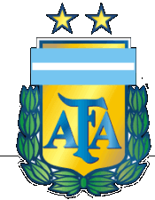
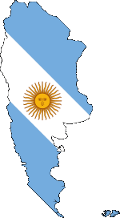

| tým | utkání | výhry | remízy | prohry | vstøelené | obdržené | body | úspìšnost | |
| 1 | FC Petrùvka | 1020 | 674 | 131 | 215 | 2813 | 978 | 2152 | 70,3% |
| 2 | FC Boca Pupíci | 892 | 580 | 109 | 203 | 2599 | 904 | 1845 | 68,9% |
| 3 | FC Bulldogs Chomutov | 750 | 470 | 101 | 179 | 1968 | 711 | 1518 | 67,5% |
| 4 | Colón de Santa Fe | 690 | 476 | 74 | 140 | 2092 | 582 | 1508 | 72,9% |
| 5 | SK Berani Senomaty | 690 | 468 | 94 | 128 | 2157 | 622 | 1498 | 72,4% |
| 6 | CA Boca Juniors | 750 | 363 | 118 | 269 | 1351 | 1072 | 1203 | 53,5% |
| 7 | Club Deportivo Philly de Žatec | 630 | 303 | 90 | 237 | 1273 | 922 | 993 | 52,5% |
| 8 | San Lorenzo | 360 | 253 | 33 | 74 | 1047 | 376 | 792 | 73,3% |
| 9 | FC Velenovy | 420 | 239 | 69 | 112 | 952 | 569 | 786 | 62,4% |
| 10 | Zdislavice Crew | 420 | 218 | 50 | 152 | 836 | 563 | 720 | 57,1% |
| 11 | Buldoci United | 390 | 218 | 60 | 112 | 894 | 468 | 701 | 59,9% |
| 12 | ACS zewlteam | 390 | 177 | 78 | 135 | 761 | 525 | 609 | 52,1% |
| 13 | Hrabuvka ghetto | 360 | 178 | 69 | 113 | 647 | 438 | 603 | 55,8% |
| 14 | Boca Quadre | 300 | 174 | 61 | 65 | 650 | 287 | 583 | 64,8% |
| 15 | River Plate PR Ponce | 300 | 166 | 62 | 72 | 605 | 320 | 560 | 62,2% |
| 16 | FK Dubnice | 360 | 170 | 51 | 139 | 783 | 546 | 552 | 51,1% |
| 17 | Club Estudiantes | 270 | 160 | 32 | 78 | 649 | 301 | 512 | 63,2% |
| 18 | Stiffteam | 330 | 141 | 76 | 113 | 523 | 443 | 499 | 50,4% |
| 19 | SouthCity United | 270 | 152 | 35 | 83 | 664 | 366 | 491 | 60,6% |
| 20 | Apatchi | 360 | 143 | 45 | 172 | 549 | 594 | 474 | 43,9% |
| 21 | Boca Juniors | 270 | 111 | 69 | 90 | 413 | 354 | 402 | 49,6% |
| 22 | Tatran Smiøice | 270 | 115 | 36 | 119 | 410 | 414 | 395 | 48,8% |
| 23 | FC Buenos Aires 2011 | 240 | 110 | 37 | 93 | 478 | 372 | 367 | 51,0% |
| 24 | FC Arsenal de Sarandí | 240 | 100 | 63 | 77 | 373 | 316 | 363 | 50,4% |
| 25 | Lazceteam | 480 | 96 | 56 | 328 | 418 | 1315 | 344 | 23,9% |
| 26 | FC Independiente West Vroutek | 360 | 100 | 43 | 217 | 466 | 823 | 343 | 31,8% |
| 27 | Pamplona | 420 | 95 | 52 | 273 | 447 | 1210 | 337 | 26,7% |
| 28 | FCFC | 300 | 89 | 67 | 144 | 417 | 458 | 334 | 37,1% |
| 29 | .DNB. | 420 | 86 | 43 | 291 | 455 | 1173 | 296 | 23,5% |
| 30 | TJ Veèa | 240 | 77 | 58 | 105 | 371 | 387 | 289 | 40,1% |
| 31 | CA Koudy Sarsfield | 300 | 86 | 41 | 173 | 346 | 629 | 285 | 31,7% |
| 32 | Lustigen | 270 | 70 | 45 | 155 | 295 | 528 | 255 | 31,5% |
| 33 | Union Oslov | 270 | 69 | 32 | 169 | 381 | 621 | 244 | 30,1% |
| 34 | Colorado Avalanche | 180 | 64 | 37 | 79 | 222 | 254 | 229 | 42,4% |
| 35 | C.A. All Boys Vršovice | 210 | 67 | 25 | 118 | 313 | 514 | 226 | 35,9% |
| 36 | fc jiskra burani | 270 | 60 | 31 | 179 | 237 | 748 | 223 | 27,5% |
| 37 | CA Villerías | 150 | 64 | 25 | 61 | 277 | 231 | 217 | 48,2% |
| 38 | Seatrend | 150 | 59 | 32 | 59 | 206 | 185 | 209 | 46,4% |
| 39 | Milan Associazione Calcio | 180 | 49 | 46 | 85 | 250 | 286 | 193 | 35,7% |
| 40 | AFK SPARTAK KBELY 1921 | 180 | 50 | 28 | 102 | 295 | 372 | 178 | 33,0% |
| 41 | R.U.M. Cataratas del Iguazú | 150 | 43 | 21 | 86 | 161 | 390 | 150 | 33,3% |
| 42 | Fc Mendoza Red devil | 120 | 39 | 27 | 54 | 136 | 168 | 144 | 40,0% |
| 43 | Cacciatore de Sársfield F.C. | 120 | 35 | 34 | 51 | 123 | 169 | 139 | 38,6% |
| 44 | Cf Sportísimo Andarin Flecha HK | 90 | 35 | 12 | 43 | 212 | 153 | 117 | 43,3% |
| 45 | FC Bambusové výhonky | 120 | 24 | 30 | 66 | 118 | 190 | 102 | 28,3% |
| 46 | Cf Altiero | 120 | 29 | 11 | 80 | 138 | 322 | 98 | 27,2% |
| 47 | Ultras Sparta Praha | 90 | 23 | 22 | 45 | 98 | 143 | 91 | 33,7% |
| 48 | FC Jameson Buenos Aires | 120 | 25 | 11 | 84 | 154 | 329 | 86 | 23,9% |
| 49 | River Plate Vysoká FK | 90 | 26 | 6 | 58 | 119 | 263 | 84 | 31,1% |
| 50 | Las Palmas | 90 | 21 | 21 | 48 | 87 | 133 | 84 | 31,1% |
| 51 | La Batalla | 95 | 23 | 15 | 57 | 115 | 221 | 84 | 29,5% |
| 52 | Newels Old Boys | 60 | 21 | 5 | 34 | 105 | 161 | 68 | 37,8% |
| 53 | AFC Tygress de Monýsek | 60 | 18 | 13 | 29 | 116 | 114 | 67 | 37,2% |
| 54 | ggg ostrovani b | 90 | 15 | 12 | 63 | 70 | 199 | 57 | 21,1% |
| 55 | Fk Tábor | 60 | 14 | 12 | 34 | 48 | 126 | 54 | 30,0% |
| 56 | Rinnegatos de Picudo Sombreros | 60 | 13 | 14 | 33 | 78 | 109 | 53 | 29,4% |
| 57 | ARG club de Barcelona C.F. | 120 | 15 | 8 | 97 | 98 | 521 | 53 | 14,7% |
| 58 | FC Real Medlov | 60 | 12 | 7 | 41 | 69 | 145 | 43 | 23,9% |
| 59 | Jaguares de C.A. Independiente | 60 | 11 | 8 | 41 | 51 | 148 | 41 | 22,8% |
| 60 | Zebronov | 30 | 12 | 3 | 15 | 45 | 43 | 39 | 43,3% |
| 61 | Vaca Ratíškovice CF | 60 | 10 | 8 | 42 | 43 | 152 | 38 | 21,1% |
| 62 | Rosario Central | 35 | 10 | 7 | 18 | 40 | 70 | 37 | 35,2% |
| 63 | SC Highcastle Rovers | 30 | 10 | 5 | 15 | 53 | 57 | 35 | 38,9% |
| 64 | FC Mendosa | 30 | 10 | 5 | 15 | 27 | 50 | 35 | 38,9% |
| 65 | Jaguares de C. A. Independiente | 30 | 9 | 4 | 17 | 45 | 57 | 31 | 34,4% |
| 66 | Jaguares de C. A. Barca Juniors | 30 | 8 | 7 | 15 | 44 | 55 | 31 | 34,4% |
| 67 | TJ Agro Milotice | 30 | 5 | 4 | 21 | 25 | 81 | 19 | 21,1% |
| 68 | MGK Telapet of the world | 30 | 4 | 5 | 21 | 13 | 71 | 17 | 18,9% |
| 69 | Boca Bryans | 24 | 4 | 1 | 19 | 23 | 73 | 13 | 18,1% |
| 70 | Liga maester | 14 | 2 | 1 | 11 | 13 | 48 | 7 | 16,7% |
| 71 | FC SPRAYRI | 27 | 2 | 1 | 24 | 14 | 82 | 7 | 8,6% |
| 72 | S.C. EI Chorrillo Scorpions | 30 | 0 | 0 | 30 | 6 | 163 | 0 | 0,0% |
| 73 | Punta de Los Llanos Bombers | 30 | 0 | 0 | 30 | 6 | 193 | 0 | 0,0% |
| 74 | Boca | 30 | 0 | 0 | 30 | 5 | 189 | 0 | 0,0% |